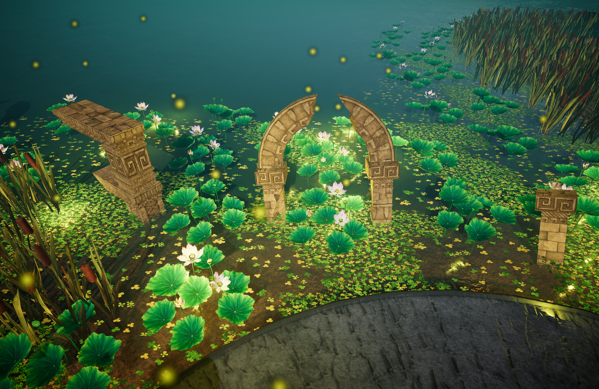
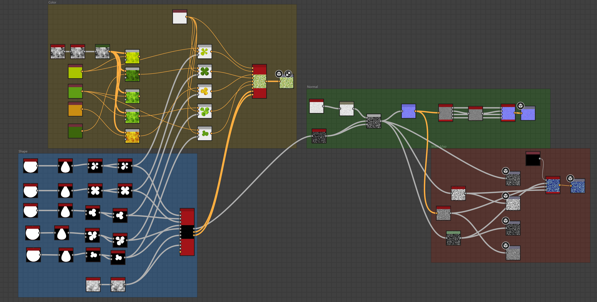
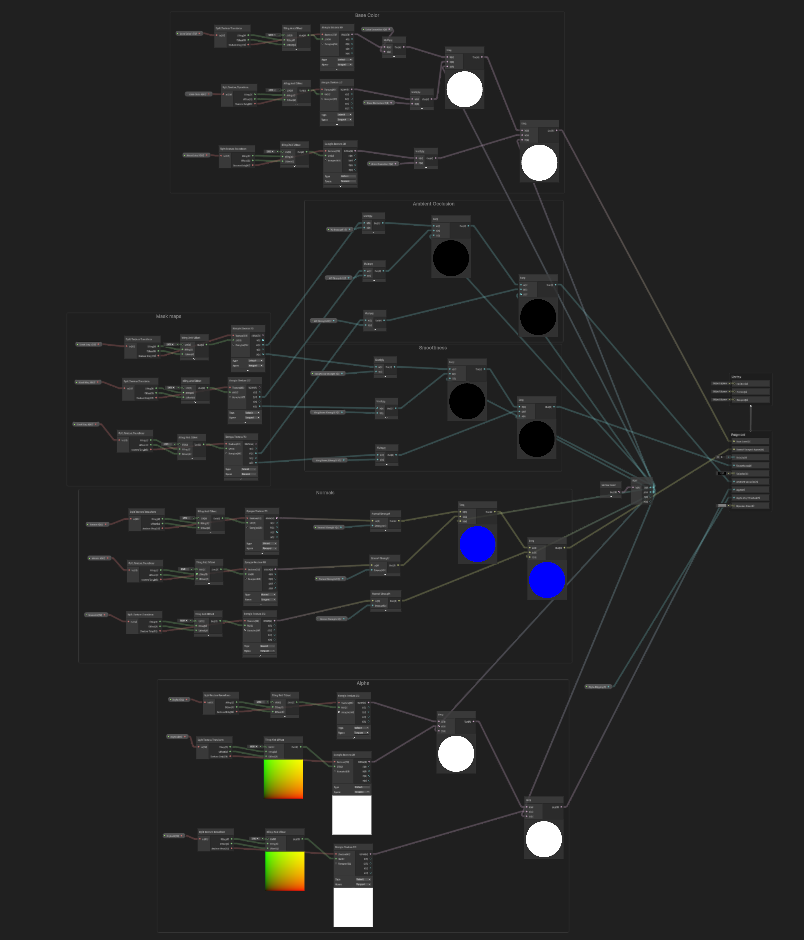

Anchorbound: Into the Mire · Tileable Textures
Duckweed Tileable Texture


Shader Application

The duckweed texture was designed to be vertex-painted onto the water’s surface. I first created the shape of the individual duckweed leaves, then used noise to distribute them into a tileable pattern. From this result, I generated the base colour, normal, and mask maps separately. I created two variations: one with dense coverage and another with sparse coverage. Blending between them through vertex painting allowed me to create the smooth, natural transition shown in the image.